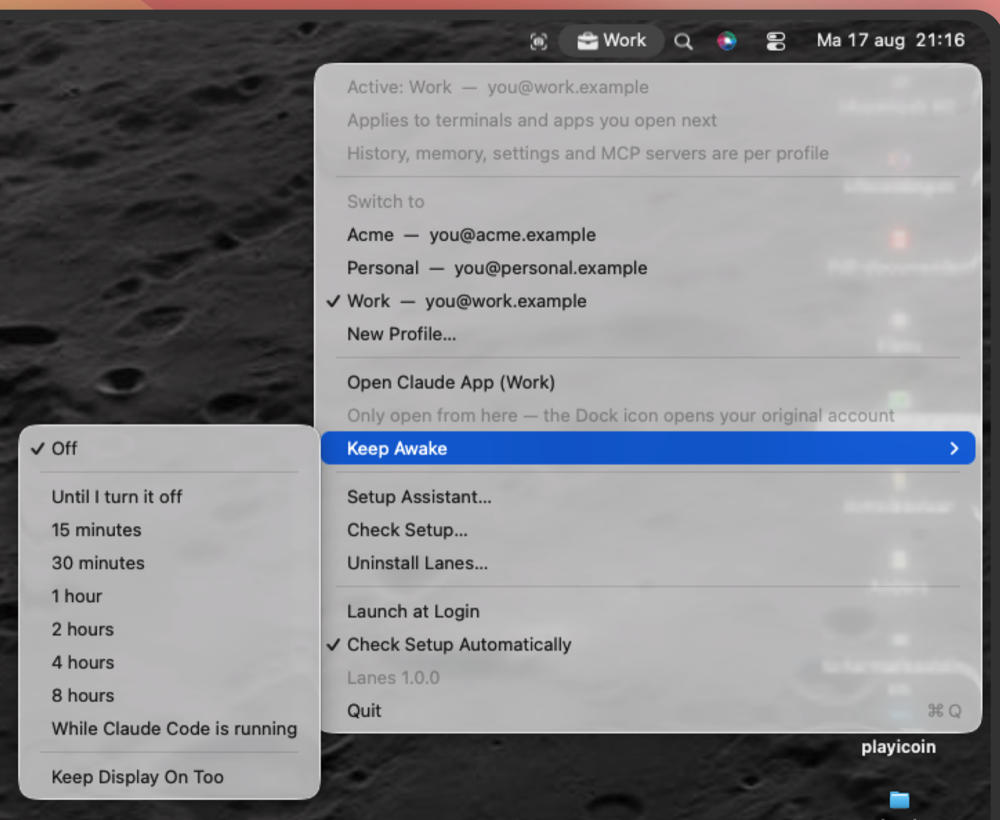

Claude Code in a terminal
The hook sets CLAUDE_CONFIG_DIR in every new shell, and a
pinned project overrides it.
An open terminal keeps the account it started with. Open a new tab.
Claude Code can only be logged into one account at a time. Lanes switches between them from the macOS menu bar and keeps the active one on screen, so you never run a client's repo on your personal account by mistake.

lane,
which comes with the app — nothing extra to install.Lanes doesn't log you in and out, and never holds a password. Three facts are all of it.
Claude Code keeps one account's history, settings and MCP config in a
single directory. Give each account its own folder
(~/.claude-work, ~/.claude-personal) and they sit
side by side. That folder is what Lanes calls a profile.
Claude Code reads CLAUDE_CONFIG_DIR to pick the folder.
That's the whole switch. It also finds the login in your Keychain by hashing
that path, so profiles can't reach each other's tokens and Lanes never
handles one.
A program gets its environment at startup, and nothing can change it from outside afterwards. So Lanes writes the active profile to one small file, and a shell hook reads it whenever a shell starts, including the one in your editor. zsh, bash and fish each get one.
That hook is also where the lane command
comes from — a shell function, not a second thing to install. The setup
wizard writes it; open a new terminal and it's there.
A terminal that's already open doesn't follow along when you switch. It can't: see fact three. Switching applies to what you start next, so open a new tab.
Clicking a profile in the menu changes it globally, which makes it exactly
as reliable as your memory. A pin takes memory out of it. Pin a repo to a
profile, and every claude you start in a terminal there uses
that account, whatever the menu bar says.
The pin is one word in a .lanes file, found by walking up from
wherever you are, so the repo root covers everything below it. Commit it
and a colleague running Lanes gets the same pin. Someone without a profile
of that name gets a warning rather than the wrong account.
$ cd ~/clients/acme
$ lane lock acme
pinned ~/clients/acme to 'acme'
Commit .lanes to share the pin, or add it to .git/info/exclude to keep it yours.
$ claude
lanes: ~/clients/acme is pinned to 'acme' — using it for this command.A terminal, your editor's extension, and the desktop app. They don't pick the account the same way, so here's what happens in each, including where Lanes can't help.
The hook sets CLAUDE_CONFIG_DIR in every new shell, and a
pinned project overrides it.
An open terminal keeps the account it started with. Open a new tab.
The extension runs the same CLI, so it lands in the same account, taken from the hook when the editor launches. Cursor, VSCodium and Windsurf too.
An editor holds its account until you quit it
completely — reloading the window isn't enough — and pins don't reach the
side panel. "claudeCode.useTerminal": true fixes both.
A different login: Electron cookies, which
CLAUDE_CONFIG_DIR can't touch. Each profile gets its own data
directory, so two accounts can be open at once.
Open it from the Lanes menu. The Dock icon opens your original account, not a profile.
Its account lives in cookies, which come from the data directory it was
launched with. That's a launch argument, and a Dock icon has none, so the Dock
always opens the account you had before Lanes. For a profile, use
Open Claude App (Work) in the menu, or run
lane app.
Every ~/.claude-* folder is a profile. No registry, no config
file to keep in sync. Make a folder and the menu picks it up within five
seconds.
One .lanes file ties a repo to one account, and the hook
honours it whatever is active. A pin should outrank a menu click from last
Tuesday.
Hold a power assertion indefinitely, on a timer, or for exactly as long
as a claude process is alive, so a long run doesn't die when the
Mac sleeps.
Check Setup… in the menu, or ./doctor.sh from
your shell. It names the file and line overriding the hook, and any editor
window that has drifted onto another account.
What it found, what you get to choose, then a numbered plan, all before it changes anything. It turns the Claude install you already have into your first profile.
Switching is a change of path, so tokens stay where Claude Code put them. Lanes only ever asks the Keychain whether an item exists — never for what is in it.
Lanes ships as source, and that's the whole install. build.sh
compiles it, signs it ad-hoc, puts it in /Applications and starts
it.
$ git clone https://github.com/rowansail/lanes
$ cd lanes
$ ./build.sh
The Claude install you already have becomes your first profile.
On first launch a wizard offers to move ~/.claude to
~/.claude-original and leave a symlink behind. Same history, same
projects, nothing deleted, and it shows you the plan first. Keep the name:
original is the only word that will still tell you, a year from
now, which folder was there before Lanes.
Then log in once per profile: restart your shell with
exec zsh, then run claude auth login. The folder
moved, so the Keychain name moved with it, and Lanes won't move a token for
you.
The lane command comes with it. There's no
second install and no package to add: the wizard writes a hook into your
shell config, and that hook defines lane along with everything
else. It's a shell function rather than a binary, so it lives in interactive
shells only — which lane finds nothing, and a script gets
CLAUDE_CONFIG_DIR from the hook instead, which is the half that
does the switching.
lane command separately?No. It arrives with the app. The setup wizard writes a hook into your
shell config — ~/.zshenv, ~/.bash_profile or
~/.config/fish/config.fish — and that hook is what sets
CLAUDE_CONFIG_DIR and defines lane. Open a
new terminal after setup and it's there. If it isn't, the hook isn't
installed, which the app notices by itself and offers to fix from the menu.
Because it's a shell function and not a binary on $PATH,
which lane comes up empty and it doesn't exist inside scripts;
scripts still get CLAUDE_CONFIG_DIR, which is the part that
switches the account.
Yes, with nothing to configure. The extension runs the same CLI, so
CLAUDE_CONFIG_DIR picks its account and profiles stay just as
separate. Two things follow from it starting the CLI directly, with no shell
in between. The account is fixed when the editor launches, not when
the window opens — the extension host inherits its environment from the
editor's main process. Developer: Reload Window does not
change it: reloading starts a fresh extension host, but a fresh child
of an unchanged parent inherits the unchanged environment. Quit the editor
entirely and open it again. And .lanes pins don't reach the side
panel, because a pin is read by the shell function and no shell runs. Setting
"claudeCode.useTerminal": true fixes both at once — the
integrated terminal is a real shell, so every new terminal picks up the
current account with nothing to reload.
Check Setup… lists every open editor and the account it's on.
Yes, with one thing to remember. It's Electron and logs in with session
cookies, so CLAUDE_CONFIG_DIR does nothing there. Lanes gives
each profile its own data directory instead: one login per profile, after
which two accounts can be open side by side. Launch it from the Lanes menu or
with lane app, though. A data directory is a launch argument and
the Dock icon has none, so the Dock opens your original account.
Because that's what it is: the Claude install you already had, moved
from ~/.claude to ~/.claude-original with a symlink
left behind. Same history, same projects, nothing taken away. Rename it if
you like, but it earns its keep the day you're looking at three folders and
want to know which was there first.
The terminal you're in keeps the old value until you close it. Run
exec zsh, or open a new tab. An editor is the same idea one level
up: quit it completely and reopen, because reloading the window doesn't
replace the process that holds the value.
echo $CLAUDE_CONFIG_DIR is emptyThe hook isn't installed. The app notices that by itself and offers to fix it from the menu.
Something sets CLAUDE_CONFIG_DIR after the hook does: an
export in .zshrc, or
terminal.integrated.env.osx in your editor settings. Run
./doctor.sh and it names the file and the line.
It might. CLAUDE_CONFIG_DIR and the Keychain naming scheme
are undocumented, established by watching how Claude Code behaves rather than
from a specification, and Anthropic can change either in any release. If
profiles stop staying separate after an update, suspect that first.
Check Setup… reports the Claude Code version for this reason,
and checks whether the Keychain still looks the way Lanes expects.